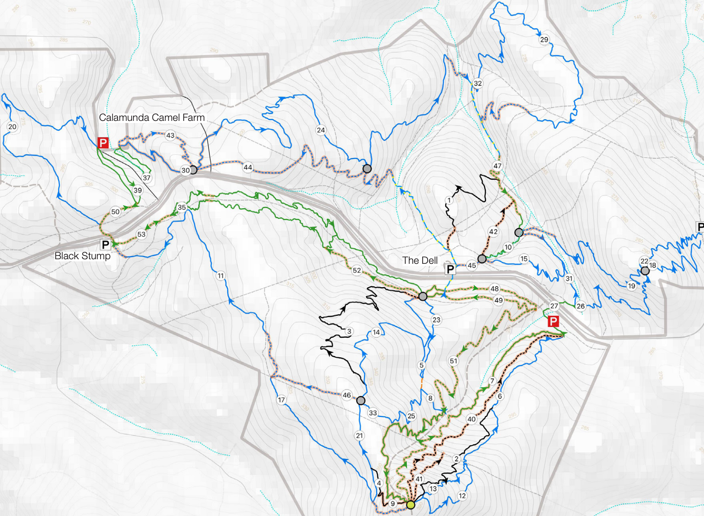
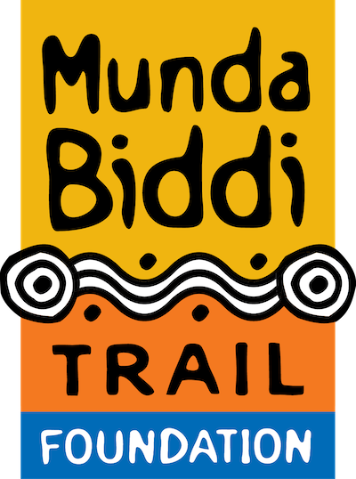

- This is the Kalamunda MTB Network Concept from 2021 — the master plan for the trail network.
- It shows existing trails, planned trails, and the overall vision for the network.
- As a steward, you don't need to know every trail on this map, but it's useful context for understanding where your trail fits in the bigger picture.
- The Trail Management Plan is the operational document — this is the strategic vision.
KMBC Trail Maintenance Working Group
Trail care, network longevity, and the Trail Steward approach
Presented by
[WG Lead Name] — Working Group Lead
[contact email] · [contact phone]
Kalamunda Mountain Bike Collective | Working in partnership with DBCA
- Welcome everyone — you're here to learn about getting involved in trail maintenance.
- We don't know yet what each of you wants to do — that's fine. This session is about showing you how it works so you can decide.
- Speaker intro: briefly introduce yourself — your background, your role with the club, why you're leading this. Keep it short.
- This program gives you a framework, confidence, and a systemic safety net to look after our trails without feeling exposed.
- Ask the room: "Who's ridden a trail recently and noticed it needed work?"
Why You're Here
This session covers
A new role we're introducing and why it exists
Where to find the info you need
Your scope — what you can and can't do
Risk management and staying protected
How to get started
This session doesn't
Teach hands-on maintenance (that's the practical session)
Qualify you to build new trails
Give you authority to close trails
Authorise power tools or chainsaws
Cover everything — you'll read the docs for detail
After today: you'll know what's required, where the info lives, and whether you want to take the next step.
- This is an intro, not the complete induction. It signposts — you read the docs for detail.
- Be clear: this session alone doesn't make you a steward. There's a practical session too.
- The "doesn't" column is important — manage expectations. No one leaves thinking they can close a trail or use a chainsaw.
- After today you decide if you want to proceed. If yes, we talk about next steps at the end.
The Trail Steward Model
What we've been doing
Scheduled maintenance days — crew turns up at a set time for projects on a trail or two
That structure works and will continue
What we're adding
Flexible work outside scheduled days — for registered stewards
Allocated steward(s) per trail — ongoing responsibility, issues caught early
Work within agreed scope, logged and reported
Operating inside the KMBC/DBCA framework — protected
Why this matters: the steward model expands what volunteers can do safely, without waiting for a scheduled day.
- You're here to learn about getting involved in trail maintenance. This session is about how that works.
- Context: there's been a lot of recent contractor trail work and new trail builds in the area. Things are changing, and we need a coordinated approach to keeping them maintained.
- Speaker note: volunteer maintenance has been on hold because major contractor works were pending approval. The contractor works would have made most volunteer efforts wasted if they'd happened before the contractors started. Now that the contractor works are proceeding, volunteer maintenance can resume. This program is part of being ready to hit the ground running.
- What we've been doing: scheduled maintenance days. A crew turns up at a set time and we work on projects on a trail or two. That structure works well and will continue.
- What we're adding: the steward model. This allows more flexible work to happen outside of that structure, for people who are registered. Instead of waiting for a scheduled day, a steward can head out to their trail when it suits them.
- Allocated steward(s) per trail means someone is keeping an eye on it regularly — issues are caught early, work is logged, and DBCA can see we're active and responsible.
- "Owns" a trail doesn't mean they can do whatever they want. It means they're the point of contact for that trail.
- The framework is what makes this safe — you're not a random person with a shovel, you're a sanctioned volunteer operating under a DBCA agreement.
- This is why this presentation exists — to set up that framework before you pick up a tool.
- Speaker intro: briefly introduce yourself — your background, why you're leading this, your involvement with the club and trail care. Keep it short.
The Munda Biddi Trail
Sections of our riding network share physical trail corridors with the Munda Biddi Trail.
The Munda Biddi is overseen by the Munda Biddi Trail Foundation (MBTF) and not by KMBC.
A matching maintenance model: The MBTF utilises a highly successful sectional volunteer maintenance program very similar to what I just explained.Refer: mundabiddi.org.au

Who Is Who
DBCA — Landowner
↓ sets the rules
KMBC Committee — Trail Adoption Agreement
↓ coordinates
Working Group Lead
↓ supports
Trail Steward
volunteers on own schedule, or
↓ leads on the day
Trail Crew
volunteers on busy-bees, or with Steward
DBCA sets the rules and is ultimately responsible for the network. KMBC is the custodian and lead maintainer, the WG Lead supports you, you maintain the trails.
- DBCA is the landowner. They are the reason we have trails. Our relationship with them is excellent because we respect their boundaries.
- KMBC is the incorporated body with the trail adoption agreement. That agreement is what gives us access.
- The WG Lead (me) coordinates — I'm your point of contact, not your boss. You have autonomy on your trail.
- You're the steward — you own the day-to-day on your trail.
- Crew are people who show up to help on busy-bees. You lead them when they're there.
- The key message: this hierarchy is your shield. Work within it and you're protected. Step outside it and you're on your own.
Becoming a Trail Steward
Maintain current KMBC membership.
Complete this intro session.
Complete a practical on-site induction:
Maintenance day, Three Chillies practical session, or on-trail mentoring.
Register as a KMBC / DBCA volunteer: volgistics.com/appform/758938279 .
Set up your Trailforks profile: trailforks.com or app.
Confirm understanding and agreements with the WG Lead.
Join the Trail Maintenance Working Group Chat, and get your trail allocation!
Note that this may change as the program develops.
Do you want to be a Trail Steward or help one out occasionally?
- These steps aren't just bureaucracy — each one is what makes you a "registered volunteer" in the eyes of DBCA. Registered = insured. Not registered = not insured.
- Membership first — you need to be a financial member to be covered by the framework.
- This session is step 2. You're here.
- Practical is step 3 — Three Chillies practical session is the pilot, but any maintenance day or mentoring counts.
- Trailforks is how you log work and see issues — we'll cover this later.
- Trail allocation — I assign trails so we don't have overlaps. You can request a specific trail.
- Buddy system: two stewards can co-steward a trail (family pair, buddy arrangement). Provides backup, reduces neglect during absences.
- Under 16s: DBCA policy allows children as volunteers but they must be supervised by a parent or guardian. Family participation is welcome within that rule.
- Working with partner groups: we coordinate with other trail groups where our work overlaps. The WG Lead manages these relationships.
Maintenance vs Building
Trail Building (Trail Development)
Environmental impact surveys, clearing permits
Corridor engineering, fall-line calculations
High risk of irreversible hillside erosion
DBCA's 8-stage Trail Development Process
Trail Maintenance
The line is already set — alignment is done
Keep it running safely and smoothly
Surface preservation and vegetation clearing
Hand tools, within scope, low risk
You're doing the simple one. The complex choices were made during building. Your job is to keep what exists.
WA MTB Management Guidelines — Trail Development Process
- Building is a serious undertaking — permits, surveys, engineering. One wrong calculation and you've eroded a hillside permanently.
- Maintenance is simple by comparison. The trail is there. You keep it there.
- This is why the scope is narrow — we're not asking you to be engineers. We're asking you to keep a line clear and draining.
- If you ever think "this needs a re-route" — that's building. Escalate it. Don't do it yourself.
The 3 Pillars of Building & Maintenance
1
Water Management
Work with the natural environment so the trail lasts with minimal ongoing effort.
2
Rider Management
Guide riders to use the trail in a way that's fun and safe — without them knowing they're being managed.
3
Landowner Management
Maintain what exists. Stay in scope. Keep DBCA happy — they're the reason we have trails.
Every decision should serve at least one pillar. If it doesn't, question whether it's necessary.
- Deliver these one at a time for impact. Each card appears as you press the arrow key.
- Water: if you've heard anything about trail maintenance, it's probably this. Clearing drainage is super impactful and beneficial. Most of what you'll do falls under this pillar.
- Rider: in our environment, this could be considered many times more important than water. Especially with the Strava and eBike mentality — riders carry more speed, brake harder, wear the trail faster. Slow growing scrub, generally sparse. Gravel dug up easily. Rocks come loose. All of this is rider-caused wear.
- Landowner: or else we have nothing. This is easy, and totally reasonable. The idea is to get more trails by being responsible for the ones we have. In general, DBCA wants the same thing as us — good trails, well maintained, minimal risk. We just need to work within their framework.
- The rule: if a decision doesn't serve at least one pillar, don't do it. Simple test.
- Detail on all three is in the WA MTB Management Guidelines — we're not teaching it today, just signposting.
Your Reference Documents · DBCA
You don't need to memorise these. Download them and keep them handy.
WA MTB Management Guidelines
Trail classifications, TTF standards, the 8-stage Trail Development Process, hazard inspection.
Volunteer WHS Induction
Work Health and Safety obligations, volunteer responsibilities as "workers", risk management, hazard reporting, PPE, insurance.
Volunteer Code of Conduct
Conduct expectations, ethics and the department's values.
- These documents cover everything you need. We reference them throughout today.
- The WA MTB Guidelines is the big one — it's the state-wide standard. 100+ pages. You don't read it cover to cover; you look up what you need.
- The WHS Induction is the safety framework — it's what keeps you covered.
- The Code of Conduct is short — 5 values. It's about how you behave as a volunteer.
- Both links are on the DBCA website — bookmark them or take a photo of the slide.
- The KMBC Trail Management Plan and adoption agreement are club-specific — they're on a separate docs page. Ask me for the link.
Your Reference Documents · KMBC
Management Plan - Kalamunda Mountain Bike Trail Network
Strategies for sustainable management, maintenance, and future development plans.
Trail Adoption Agreement - Kalamunda MTB Trails
The terms and conditions of the trail management partnership.
Behind the Scenes · Policies & Procedures
The KMBC Trail Management Plan has already considered many DBCA policies and procedures. No need to read them — just know there is a reason for why we have procedures to follow.
Corporate Guideline 32 — Recreation, Tourism and Visitor ServicesPolicy Statement No. 53 — Visitor Risk ManagementCorporate Guideline No. 28 — Visitor Risk ManagementDivisional Guideline — Visitor Risk Management 12 — Mountain Bike TrailsDivisional Procedure 4 — Closure of Parks & Recreation SitesIllegal Trails Communication Plan — DBCA's approach to unauthorised trail buildingFire Management SOP 101 — Protection of visitors during prescribed burning and bushfireGuidelines for sponsorships — Community organisations on DBCA-managed recreational trails and facilitiesPDWSA Operational Policy 13 — Recreation within public drinking water source areas on crown landWA Trails Development Series — State-wide trail development framework
KMBC Trail Management Plan
- You don't need to know these in detail. The point is: a LOT of policy work goes into getting trails approved and managed.
- The Trail Management Plan is the document that brings all of these together for our trail network.
- Visitor Risk Management is the big one — it's why we have classifications, why we close trails, and why we report hazards.
- The closure procedure is what gives us authority to close a trail when we spot a hazard.
- The fire SOP is why we don't work during prescribed burns or bushfire risk days.
- The illegal trails communication plan is why we NEVER build unsanctioned trails — DBCA has a formal process for dealing with them.
DBCA Volunteers
5 core values
Integrity
Collaboration
Accountability
Respect
Excellence
Your responsibilities as a volunteer
Take reasonable care for your own health and safety
Ensure your actions do not harm others
Follow DBCA's reasonable instructions
Comply with DBCA health and safety policies and procedures
Under the WHS Act 2020, volunteers are legally recognised as "workers" — the same duty of care as paid staff.
DBCA Volunteer Work, Health, and Safety Induction
- The 5 values aren't just words on a page — they're the standard DBCA expects of all volunteers.
- Integrity: do what you say, be honest in reporting.
- Collaboration: work with DBCA, not against them. We're partners. Also work with partner groups where our work overlaps.
- Accountability: if you make a mistake, report it. Don't hide it.
- Respect: for the land, for other users, for DBCA staff, for other volunteers.
- Excellence: do quality work. A poorly maintained trail is worse than an unmaintained one.
- The "workers" point is important — it means you have the same legal protections AND the same legal obligations as paid DBCA staff. You're not a random volunteer; you're a recognised worker under the Act.
- Two reporting channels: trail issues go to Trailforks (public, logged). Safety/incident issues go to the WG Lead (private, escalated). Know which channel for which issue.
- If injured: the WG Lead helps you submit a Personal Accident Claim to DBCA/ICWA. Don't try to navigate that alone.
- Read the Code of Conduct — it's short. 1-2 pages.
DBCA Code of Conduct
6 core values
Personal Integrity
Act with care and diligence. Make decisions that are honest, fair, impartial and timely.
Relationships with Others
Treat people with respect, courtesy and sensitivity. Recognise their interests, rights, safety and welfare.
Accountability
Use State resources responsibly — human, natural, financial, physical, property and information.
Environmental Responsibility
Care for and protect the natural environment. Take a long-term perspective. Partner with and empower others.
Work Ethic
Persistence, dedication and innovation. Show courage, initiative and creativity in our responsibilities.
Team Work
Value and rely on each other to be safe and work effectively across the diverse lands and waters we manage.
The full Code of Conduct includes a checklist of behaviours that volunteers must agree to. Read it and sign off before you start.
DBCA Volunteer Code of Conduct
- These 6 values are the foundation of how DBCA expects all volunteers to conduct themselves.
- Personal Integrity: honesty and fairness in everything you do. If you make a mistake, report it — don't hide it.
- Relationships: respect for other users, DBCA staff, other volunteers, and the community.
- Accountability: you're using public resources — tools, materials, trails. Use them wisely.
- Environmental Responsibility: this is the core of why we're here — caring for the land.
- Work Ethic: do quality work. A poorly maintained trail is worse than an unmaintained one.
- Team Work: we rely on each other for safety and effectiveness. Never work alone if you can avoid it.
- The full document has a list of specific behaviours you must agree to — read it before signing.
Autonomous Work vs Approval Required
Clearing drainage
Vegetation trimming
Removing debris
— fallen branches, loose rocks
Demarcation
- blocking reroutes and alternate lines
Surface maintenance
— fixing ruts, packing loose sections
Shaping features to original design
— jumps, berms, rollers
Repositioning rocks and logs
Signage repairs
This is most of what trail maintenance is.
Need to ask first
Anything structural — assembled features
Extended trail closures
New features
Changes to trail character
Work outside the existing trail alignment
When in doubt, ask. That's the framework working.
- Green list: this is your bread and butter. 90% of trail maintenance is on the left side.
- Amber list: these aren't "no" — they're "ask first." The answer is often yes, but the process matters.
- The distinction is simple: if it changes what the trail IS (not just how it's running), ask.
- Power tools: we'll cover this on the next slide, but the short version is chainsaw = ticket required.
- Closures: you can recommend a closure, you can't action one. The WG Lead does that.
Trail Closures
When to recommend a closure
Active hazard — tree down across a jump landing
Severe weather damage — where risk management can't be put in place
Planned work — that requires a closed trail to proceed safely
How it works
You assess and recommend a closure to the WG Lead
On approval , you action the closure (signage, notifications, Trailforks)
Once work is complete , you reopen the trail
Active hazards should still be marked immediately — rider safety first
WA MTB Management Guidelines — Trail Closures
- You don't have the authority to close a trail. That's not a limitation — it's a protection. If you close a trail and someone ignores the closure and gets hurt, the liability question gets complicated.
- The WG Lead actions closures because they can coordinate signage, notifications, and Trailforks updates.
- If it's urgent and dangerous — a tree across the trail that someone could hit at speed — you can place a makeshift barrier or warning while you escalate. Common sense. But the formal closure goes through the WG Lead.
- For a tree down: there's a requirement to ensure it's marked so a rider isn't put at risk. Be aware of ride-arounds becoming the new line — that causes environmental damage. Mark it, report it, escalate.
- "Safety to riders and diggers" — if work needs a closed trail, the closure is approved BEFORE the work starts. You don't start work and then decide to close.
Tools: Allowed & Not Allowed
Allowed (routine maintenance)
Shovel, rake, mattock, crowbar
Hand saw (for small branches/vegetation)
Secateurs, loppers
McLeod, Pulaski (trail-specific tools)
Wheelbarrow, buckets
PPE: gloves, eye protection, sturdy boots, long pants. Carry a first aid kit.
DBCA WHS Induction — PPE & Fitness for Work
- Hand tools cover almost everything you'll do. A shovel and a rake are 80% of trail maintenance.
- Chainsaw is the big one — you MUST have a recognised ticket. No ticket, no chainsaw. No exceptions. This is a DBCA requirement and a WHS requirement.
- If a tree is down across your trail and you don't have a ticket, log it on Trailforks and escalate. We have people with tickets who can handle it.
- PPE is not optional. The WHS induction covers this in detail — gloves, eye protection, boots, long pants minimum.
- First aid kit: carry one. Should include a pressure bandage for snake bite. You're working in bushland — snakes are a real risk, especially in warmer months. Wear gaiters in snake season.
- If you're working with a crew, you're responsible for their PPE too.
Your Scope = Your Shield
Work within your scope → the framework covers you
Step outside your scope → you accept personal liability
Registered volunteers are covered by DBCA Personal Accident Insurance
It's not bureaucracy — it's protection
No liability. Be responsible. If you're unsure whether something is in scope, it probably isn't. Ask.
DBCA WHS Induction — Insurance & Injury Management
- This is the most important slide in the deck. Everything else feeds into this.
- The framework isn't there to restrict you — it's there to protect you. DBCA's insurance, the WHS Act, the volunteer code of conduct — they all cover you when you work within scope.
- Insurance: registered volunteers are covered by DBCA's Personal Accident Insurance (ICWA) for out-of-pocket medical expenses from injuries while volunteering. This is NOT Workers' Compensation. It doesn't cover sickness, alcohol/drug influence, or vehicle damage.
- "Registered" means: KMBC member, completed this intro, completed practical, allocated a trail, logging hours. Not registered = not insured. This is why the steps matter.
- The moment you step outside scope — building a new feature, using a chainsaw without a ticket, closing a trail on your own authority — you're no longer covered. You're personally liable.
- "If you're unsure, ask" is not weakness. It's the framework working. I'd rather you ask me 10 questions than make one decision that puts you at risk.
- This is why we have the escalation chain (next sections). It's not about control — it's about keeping you safe.
Trail Feature Rebuild vs Maintenance
Where is the line between routine maintenance and a rebuild of a roller/jump/berm?
Routine maintenance
Proactive, preventive work to keep the trail functioning. Surface changes, same-day.
RRR — Repair, Renewal, Replacement
Significant work beyond routine maintenance. Extended closure, settling time. Generally requires experience or training.
The TMP notes that some RRR tasks may be suitable for volunteer assistance — but if the work would need an extended closure to settle, it’s outside routine maintenance.
Trail Management Plan — §9.3, §9.4, §9.8
- Pose the question to the group: "Where do you think the line is between routine maintenance and a rebuild?"
- Let them discuss. The answer is in the two columns — routine maintenance is surface-level, same-day work. RRR needs extended closure and settling time.
- The TMP §9.3 defines the categories. §9.4 lists routine tasks. §9.8 lists RRR tasks.
- Key TMP quote from §9.8: "These tasks generally require skilled professionals due to their complexity, safety considerations, and need for specialised equipment. While volunteers play a vital role in routine upkeep, these more involved activities should be undertaken by experienced contractors or trained staff. Through the trail audit process some tasks may be suitable to be assisted by volunteers."
- The nuance for the presenter: volunteers should do all the work they're capable of if they know what they're doing — but we can't go against the TMP. The guideline is: if you can complete the work in a session and the trail reopens same day, it's maintenance. If it needs to settle for days, it's RRR.
- Surface changes: reshaping the top layer of a berm, packing back eroded tread, replacing a worn roller. Same day.
- RRR: reshaping the entire berm structure, rebuilding a jump landing, replacing a bridge. Needs settling time, engineering, trail closure. That's building work — needs approval, planning, and qualified builders.
- Liability angle: if you do an RRR work that hasn't settled properly and a rider gets hurt, that's on you. Stay within surface maintenance to stay protected.
Risk Management on the Trail
Before you go
Tell someone where you're going and when you'll be backUpdate them when you're done — no update = they raise the alarm
Spouse, close friend, or another trail maintenance person
The 4-step risk process (DBCA WHS Induction)
Identify hazards
Assess the risk
Control the risk
Review and monitor
Hierarchy of controls: Elimination > Substitution > Engineering > Administrative > PPE. PPE is the last line of defence, not the first.
DBCA WHS Induction — Risk Management & Remote Work
- The "tell someone" rule comes directly from the DBCA WHS Induction's remote work procedures. It's not our invention — it's the standard.
- This is the single most important safety practice. If you're alone on a trail and something happens, no one knows.
- Your partner, a friend, or another steward. Text them when you start, text them when you're done.
- Phone reception: reception is patchy in parts of the area. Plan your check-in timing around known reception spots. Don't head in deep without checking in first.
- Buddy system: where possible, don't work alone. Buddy up with another steward or a crew member. The DBCA induction covers working alone, but we'd rather you didn't if you can avoid it.
- The 4-step process is the standard risk management approach — identify, assess, control, review.
- Hierarchy of controls: the best control is to eliminate the hazard entirely. PPE (gloves, goggles) is the LAST resort, not the first. If you can remove the hazard, do that.
- Example: instead of wearing eye protection while clearing thorny vegetation (PPE), could you avoid that section or use a different tool (substitution/engineering)?
- All of this is in the DBCA WHS Induction document — read it. It's not long.
Managing Risks to Riders
DBCA Divisional Procedure — VRM 12, Mountain Bike Trails:
not to eliminate all risks
to maintain risks to an acceptable level:
consistent with the activity and trail classification
without sterilising the environment or removing the associated challenges
During maintenance work: You are a risk to riders. Riders are a risk to you.
Ensure riders know work is happening and any conflict is mitigated .
- The previous slide covered managing risks to YOU. This one is about managing risks to RIDERS.
- The VRM 12 quote is the key principle: we're not eliminating all risk — trails have inherent risk by design. We maintain it to an acceptable level.
- When you're working on a trail, you become a hazard to riders. A half-dug hole, loose tools, a freshly repaired berm — these are dangers to someone coming through at speed.
- It's YOUR responsibility to make sure riders know you're there and that the trail is safe to pass or closed.
- Controls: signage up-trail, a spotter warning riders, or a temporary closure for major work. Match the control to the level of danger.
- This is where the scope discussion connects: if your work needs an extended closure, it's probably outside maintenance scope.
Working in Different Weather
Summer (Dec – Feb)
Fire risk — check DBCA warnings before goingHeat stress — work early morning, carry water, stop if it's too hotSun exposure — long sleeves, hat, sunscreen
Winter (Jun – Aug)
Cold and wet — waterproof clothing, reduce work durationShorter days — chose tasks that match visibilityStorms — avoid work during lightning and high winds
Weather determines risk. Season determines work. The next slide shows what work to do when — this slide is about managing your safety in the conditions you'll encounter.
DBCA WHS Induction — Working Outdoors
- This slide is about the RISKS of working in different weather — not what work to do.
- The "When to Do What" slide covers the seasonal timing for each type of maintenance task.
- Summer risks: fire is the big one. Check DBCA warnings. Heat stress is real — early morning, water, know when to stop. Sun exposure is a WHS issue covered in the induction.
- Winter risks: cold and wet means hypothermia risk if you're caught out. Shorter days mean less daylight. Boggy ground means you can cause more damage than you fix.
- The key message: weather determines your personal risk. Season determines what work is appropriate. They're linked but different.
- Our trails are gravel-based — they handle wet conditions differently to many trail networks. But boggy spots still exist.
When to Do What · KMBC Climate
Task
Best Time of Year
Reasoning
Trail tread & TTF repair Autumn & Spring
Soil moisture is optimal for shaping and compaction; trails are drier for access
Erosion control / improvements Autumn & Spring
Prepare for or maintain after winter rains; good ground conditions
Pruning Late Winter to Early Spring
Pre-growth season and before peak spring usage; reduced fire risk
Repair blowouts / potholes Spring
Trails have dried enough from winter; damage is visible and accessible
Sign repair / replacement All year (prefer dry)
Done as needed; dry weather improves access and installation
Cleaning drainage Autumn – early Winter
Prepare for winter rainfall; ensure effective water flow
Inspections Quarterly
Seasonal monitoring identifies weather-related impacts and guides planning
Pruning vegetation Spring
Vegetation grows quickly post-winter; trimming ensures safe trail corridors
Maintain trail side slopes Autumn & Spring
Soil is stable and manageable in cooler, moist conditions
Trail Management Plan — §9.5
- This is about getting the right soil conditions — not about fire risk or heat (that's covered in the working-weather slide).
- The key takeaway: autumn and spring are your main working windows. Soil moisture is right, trails are accessible.
- Winter is for drainage prep and inspections — you're getting ready for the rain, not doing major repairs.
- Pruning is late winter/early spring — before growth kicks off and before fire season.
- Inspections are quarterly — Jan, Apr, Jul, Oct. These are your regular check-ins.
- This table is from the KMBC Trail Management Plan — it's specific to Kalamunda's climate.
Maintenance Standards
Refer to original trail specifications before starting any work, including classification (e.g. Green, Blue, Black), style (e.g. flow, technical), and intended features. — trail is already defined
Match works to original feature classification and specification ensuring jumps, drops, and technical elements retain their intended challenge level.
Use appropriate materials and techniques that align with WA MTB Management Guidelines.
Maintain consistent trail widths, surfaces, and gradients to reflect the trail’s intended character and safety expectations.
Conduct visual and ride-through assessments post-maintenance to confirm features perform as intended and are safe.
Avoid “overbuilding” or “underbuilding” features, which can alter trail difficulty or compromise user safety.
Document changes and communicate with trail designers or land managers if any deviation from the original design is necessary. OUT OF SCOPE — request approval first
Ensure drainage and erosion control measures remain effective to prevent degradation that can change the trail’s usability or safety.
Remove or rehabilitate unsanctioned user modifications that alter trail character or compromise safety.
Engage qualified trail builders or trained volunteers familiar with trail classifications and sustainable design, maintenance and construction principles.
Trail Management Plan — §9.10
- The greyed-out item about referring to original trail specs: the trail is already defined, so this doesn't really apply to day-to-day maintenance.
- The highlighted item about documenting changes and communicating with land managers: this is outside a volunteer's autonomous scope. If you need to deviate from the original design, request approval first — covered earlier in the "Can Do / Need to Ask" slide.
- Everything else is what you should be doing on every maintenance visit: match the original spec, use the right materials, check your work, don't overbuild or underbuild.
- "Remove or rehabilitate unsanctioned user modifications" — this means if someone has built an illegal feature on your trail, you can remove it. But report it first via the reporting tool.
Trailforks — Easy Reporting
What it is
Trail mapping and reporting platform
Riders and volunteers report issues
— tree down, puddles, surface damage
Trail alerts are shown in app
— status, condition, reports, photos
You can start using this now. Anyone can make reports and check trail status.
- Trailforks is how we track everything — issues, work, hours.
- It's not just for riders. As a maintenance volunteer, you'll use it to share issues you discover but haven't been able to fix, and to log work you've done so the wider community knows the trail has been maintained.
- Information helps all — riders, volunteers, land managers. The more people logging, the better the picture.
- From a steward's perspective: you get alerts when someone reports an issue on your trail. You can see what needs attention without having to ride the whole trail first.
- After each work session, you log what you did and how long you spent. This is what makes your work visible to DBCA and counts toward insurance coverage.
- We'll do a hands-on walkthrough of the app in the practical session — setting up a profile, logging a report, logging hours.
- Speaker note: show a screenshot of an actual Trailforks report if available — a real example makes it concrete.
Reporting & Escalation
Report what you can't fix
Log directly on Trailforks like any trail issue
Also report to Trail Maintenance Working Group Chat. WG Lead may escalate further.
Report safety concerns / work incidents to the WG Lead
Ensure we can minimise future issues
Document the issue
Log your hours — every session, log volunteer count and hours on Trailforks.
Shows DBCA we're active and responsible
Tracks how much work each trail needs
Supports funding applications and advocacy
DBCA WHS Induction — Incident Reporting & Volunteer Registration
- Two reporting channels: trail issues go to Trailforks (public, logged). Safety/incident issues go to the WG Lead (private, escalated). Know which channel for which issue.
- Trailforks is your primary tool. Log work, see issues, track hours.
- Public reports: riders will flag things — "tree down", "drainage blocked", "trail washed out". You get alerts. This is your early warning system.
- Escalation chain is simple: you → me (WG Lead) → committee. Routine stuff you handle and log. Anything beyond scope goes up.
- Safety/incident reports: if someone is injured or there's a near miss, tell the WG Lead directly. Don't just log it on Trailforks — the WG Lead needs to know immediately so they can help with insurance claims if needed.
- Logging hours is NOT bureaucracy. This data matters:
- DBCA wants to see we're active. Volunteer hours are evidence.
- We need to know which trails need the most work — data drives prioritisation.
- Grant applications and advocacy are stronger with real numbers.
- Logging hours also confirms you were on-site as a registered volunteer — which is what triggers insurance coverage.
- If you're not logging, your work doesn't count in the data. Log every session.
Making a Trail Work Report
After completing maintenance, file a work report in Trailforks. This records what was done and who was involved.
Find your trail
On the map, highlight the trail by touching it
Open the report menu
Touch the yellow arrow in the upper centre of the screen
Select Write Report from the dropdown menu
Status, condition & description
The trail name is auto-populated
Select Status and Condition
Add a Description — type your own or use Quick Suggestions
Description: Type of work performed · Personnel involved.
File as work report
Slide the Work Report slider to on
Record hours worked and number of volunteers
Photos & submit
Tap the camera icon to add photos (bike in frame for scale)
Submit — even offline, it uploads when you’re back in range
- Work reports are how we track what maintenance has been done across the network.
- They feed into the volunteer hours log — important for DBCA reporting and grant applications.
- You can submit offline — the report uploads when you're back in cell or wifi range.
- Always include photos — before and after if possible. Put your bike in the frame for scale.
- Record who was with you — this is how we track volunteer participation.
- Even if you just did a quick prune or cleared some debris, file a report. It all counts.
- The work report slider is the key step — that's what marks it as maintenance work rather than just a hazard report.
Staying Within Scope: Trail Ratings
Why ratings matter
Ratings define the trail's difficulty — and its limits
They stop riders from getting in over their heads
A trail rating is a critical risk mitigation tool for land managers
Rating signs act as proof that a rider was properly warned about the objective hazards of a trail before entering
Your job: maintain the trail at its current rating
Ratings are not an indication of how much fun a trail is, or how much challenge it provides to an experienced rider .
WA MTB Management Guidelines — Section 9 & Appendix 3
- The 5-level system is IMBA-based, used worldwide. White to double black.
- The key point: you maintain at the current rating. You don't add features that make a blue into a black.
- Why? Because a rider who sees a blue rating expects a blue trail. If you've quietly added a black-level feature, they might get hurt.
- Ratings stop riders from getting in over their heads. A rider who sees a blue rating expects a blue trail — if the trail has quietly become harder, they could get hurt.
- "A trail rating is a critical risk mitigation tool for land managers" and "Rating signs act as proof that a rider was properly warned about the objective hazards of a route before entering" — these are from Australian Mountain Bike (AMB). The rating system is what protects both riders and land managers.
- If ratings feel inconsistent or incorrect — e.g. a blue trail that's drifted toward black through erosion or feature creep — that's a maintenance issue. Flag it through Trailforks and the WG Lead.
- The classification specs in Appendix 3 are detailed — tread width, surface type, TTF limits, sight distance. That's reference material, not memorisation.
- If a feature has degraded and the trail is now HARDER than its rating (e.g. a jump has eroded into a drop), that's a maintenance issue — fix it back to spec, or escalate.
Examples from the Guidelines
Some key sections from the WA MTB Management Guidelines to study:
Section 8
General Trail Planning, Design, and Construction Principles
8.5 Sustainability8.5.2 Grade8.5.4 Drainage8.5.5 Minimising soil displacement8.6 Incorporating Technical Features8.6.1 Demarcation8.6.2 Filters8.6.3 Alternative lines8.6.4 Fall Zones
Section 9
Trail Classification System
Appendix 3
Trail Classification Specifications
- This section shows real examples from the WA MTB Management Guidelines.
- Don't memorise the specs — just know they exist and where to find them.
- The guidelines have real, practical, useful content with diagrams. It's not just policy waffle.
Section 8 — Construction Principles
Section 8 covers trail planning, design and construction.
- Don't teach these — just show them as examples of what's in the doc.
- We'll go through each one on the following slides.
- Encourage people to read the guidelines before the practical session.
- Grade reversals: one of the most fundamental drainage techniques — breaks the fall line so water can't build speed.
- Tread armouring: protecting the trail surface in high-wear areas.
- Demarcation: clearly defining the trail corridor to keep riders on the intended line.
- Alternative lines: A-lines and B-lines around technical features so riders can choose their difficulty.
- Fall zones: clearing the area around features where riders might come off, to reduce injury risk.
Section 9 — Trail Classification System
Gives the purpose of having classifications, plus details symbols and descriptions.
- Section 9 details the trail classification system and how it ties into visitor risk management, symbols and descriptions.
- The classification system is what protects riders — it tells them what they're getting into before they commit.
- These specs are what you maintain TO — if a feature has degraded beyond its rating, that's a maintenance issue.
- Don't memorise these — just know they exist and where to find them.
Appendix 3 — Feature type specs by rating
Appendix 3 gives specifications for each feature type by trail rating.
- Appendix 3 gives the actual specifications: how wide a trail corridor should be, how big a tabletop can be for each rating, etc.
- These specs are what you maintain TO — if a feature has degraded beyond its rating, that's a maintenance issue.
- We'll go through each one on the following slides.
- Trail corridor specs define how wide the trail should be for each rating.
- Bermed turn specs define berm dimensions and inslope for each rating.
- Tabletop specs define maximum jump heights and landing ratios for each rating.
- Drop off specs define maximum drop heights for each rating.
- These are the actual Appendix 3 pages from the WA MTB Management Guidelines.
- They show the detailed classification specifications for each feature type by rating.
- The full guidelines document is in the reference documents folder.
- Second page of Appendix 3 classification specifications.
- The full guidelines document is in the reference documents folder.
Key Takeaways
Know where the info lives — 5 documents, bookmarked
Stay in your scope — it's your shield
Report what you do — log every session
Escalate what's beyond you — that's the framework working
It's simple — maintenance, not building
- Quick recap, one per module.
- 1: The 3 DBCA documents — WA MTB Guidelines, WHS Induction, Code of Conduct. 2 KMBC - TMP, Adoption Agreement. Bookmark them.
- 2: Your scope is your shield. Work within it, you're covered. Step outside, you're on your own.
- 3: Log your hours. It's not bureaucracy — it's evidence, advocacy, and prioritisation data.
- 4: Escalate. Asking is not weakness — it's the framework working.
- 5: This is simple. The line is set. You keep it running. That's it.
What's Next
Get involved
Join a Trail Maintenance or Build Day
Attend the Three Chillies practical session
Assist a Trail Steward on their trail
Request on-trail mentoring
Then: Take on a Trail Steward role
Email [contact email] or call [WG Lead Name] on [contact phone]
Read the reference documents. Download them via the links earlier — they're your operational manual.
- The practical session is the next step — Three Chillies practical session or any maintenance day.
- Assisting a steward is a great way to learn before you have your own trail.
- Mentoring: I or another experienced steward will come out to the trail with you. Just ask.
- Make this feel exciting, not bureaucratic. "Ride a trail. Notice something. Report it. That's the first step."
Questions
Floor is open.
Contact
[WG Lead Name] — Working Group Lead
[contact email] · [contact phone]
Join the Trail Maintenance Working Group Chat
- Open the floor. Let the questions flow naturally.
- Common questions:
- "How much time does it take?" — as much or as little as you want. Even an hour a month helps.
- "Do I have to go alone?" — no. Buddy system, crew days, mentoring. You're supported.
- "What if I find something I can't fix?" — log it on Trailforks and escalate. That's the process.
- "What if I make a mistake?" — report it. We fix it together. No blame.
- End on the positive: "You can do this. It's simple. You're supported. Let's keep our trails running."